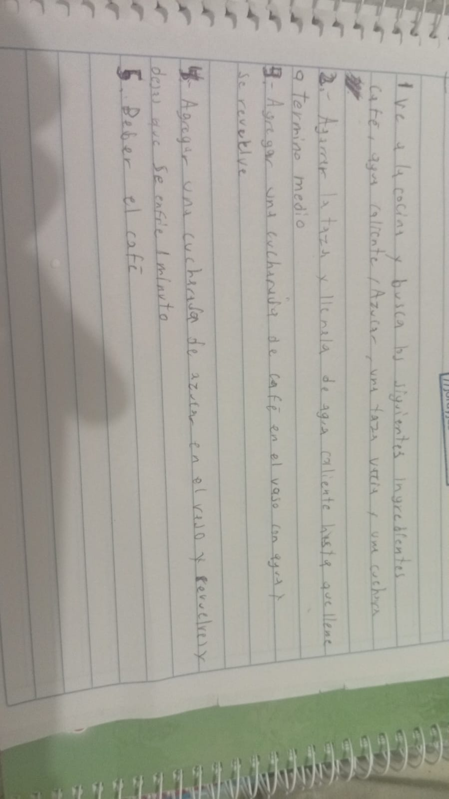

PÁGINA INDEPENDIENTE · ACTIVIDAD 02
Actividad 02
Cómo preparar un café paso a paso: ingredientes, procedimiento, evidencia fotográfica y video del proceso.
Ingredientes
MATERIALES
- Café
- Agua caliente
- Azúcar
- Una taza vacía
- Una cuchara
Procedimiento
PASOS
- Ve a la cocina y busca los siguientes ingredientes: café, agua caliente, azúcar, una taza vacía y una cuchara.
- Agarra la taza y llénala de agua caliente hasta que llegue a término medio.
- Agrega una cucharada de café en la taza con agua y revuelve.
- Agrega una cucharada de azúcar en la taza y revuelve.
- Bebe el café.
Evidencia fotográfica
FOTO DEL PROCEDIMIENTO ESCRITO

Video del proceso
PREPARACIÓN DEL CAFÉ